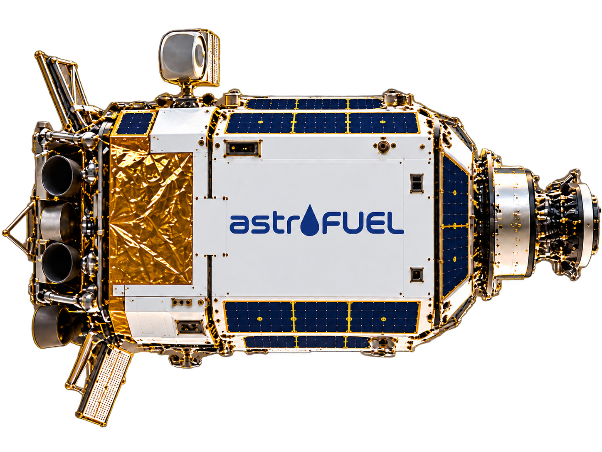
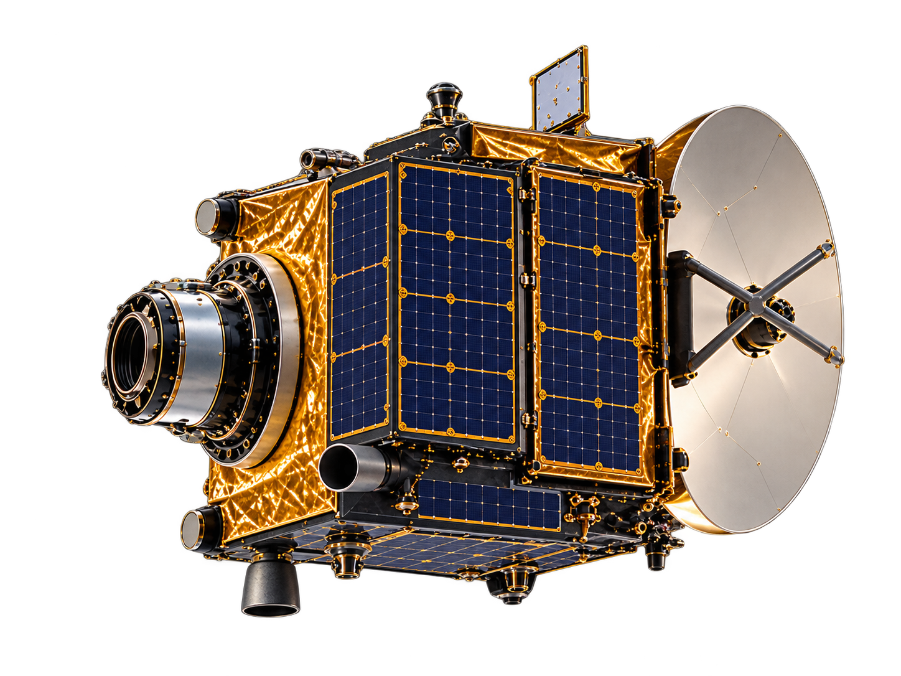
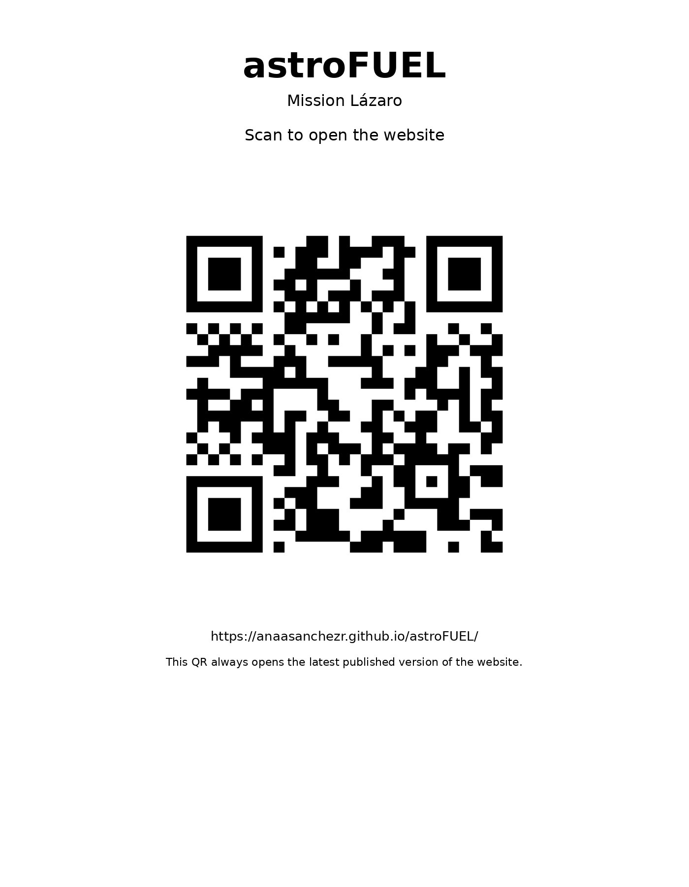

Mission Requirements
Mission-level requirements for Lazarus, including the refueling service, xenon payload, rendezvous, docking and transfer capabilities.

Fueling the next generation of space missions.
DISCOVER OUR MISSIONSatellite operations often end when onboard propellant is depleted. Lazarus is astroFUEL's first conceptual mission: an orbital servicing spacecraft designed to deliver xenon to client satellites and support the extension of their operational lifetimes.
The spacecraft uses xenon for both its electric propulsion system and the refueling service. These functions use two dedicated xenon tanks: one for Lazarus's own propulsion and one for the xenon payload transferred to clients. Its standby orbit is 50 km above nominal GEO.
AN ACADEMIC CONCEPT UNDER DEVELOPMENT · NOT AN OPERATIONAL SERVICE
Lazarus combines xenon electric propulsion with a dedicated xenon refueling payload. The two functions use separate storage tanks: one for spacecraft propulsion and one for transfer to client satellites.
Operating orbit between servicing missions
Xenon propellant
Dedicated transfer tank
Propulsion + refueling payload
Explore the six mission phases of Lazarus, from launch and orbit raising to repeated GEO servicing and End of Life.
Following launch and injection into GTO, Lazarus uses its xenon electric propulsion system to progressively increase orbital energy, reduce the orbit eccentricity and reach its GEO + 50 km standby orbit. The transfer is represented as a continuous low-thrust orbital evolution driven by electric propulsion.
Launcher injection
Xenon low-thrust propulsion
Progressive orbital evolution
Standby orbit
Scroll to follow the progressive low-thrust orbit raising.
Lazarus begins the transfer after launcher injection into GTO.
SCROLL TO CONTINUEConceptual low-thrust trajectory, not to scale. The GEO + 50 km separation is exaggerated for readability. The final thrust law, transfer duration and coupling between orbit raising, circularization and inclination reduction depend on the mission-analysis optimization.
Between services, Lazarus remains in its GEO + 50 km standby orbit. When a client requests refuelling, the mission is planned for that target and the spacecraft begins the phasing and rendezvous sequence required to reach the client satellite in GEO. The orbital phasing and approach are performed progressively with xenon electric propulsion. As the relative distance decreases, navigation and guidance transition toward close-proximity operations for the final docking sequence.
Standby orbit
Selected servicing opportunity
Xenon low-thrust manoeuvring
Transition to relative navigation
Conceptual servicing transfer, not to scale. The GEO / GEO + 50 km separation and trajectory curvature are exaggerated for readability; the detailed thrust law and phasing strategy are defined by Mission Analysis.
After rendezvous, Lazarus transitions to close-proximity operations. Relative-navigation sensors and the AOCS/GNC system guide the final approach, align the spacecraft with the client interface and support a controlled docking. If an unsafe condition is detected, the approach can be aborted to restore a safe separation between both vehicles.
Relative navigation
Final approach and alignment
Mechanical connection to the client
Safe separation if required
Once docking is established, the connection is checked and the refuelling operation begins. Xenon is transferred from Lazarus' dedicated payload tank to the client spacecraft through the fluid-transfer system while the operation is monitored and controlled. The xenon used for Lazarus' own electric propulsion remains stored in a separate propulsion tank.
Heavy noble gas for electric propulsion
Dedicated transfer tank
Docking and transfer interface verification
Not part of the client payload transfer
Scroll through the close-proximity servicing sequence.

astroFUEL
CLIENT SPACECRAFTThe servicing spacecraft closes the relative distance.
After the required xenon has been transferred, the fluid-transfer path is isolated, the vehicles demate and Lazarus performs a controlled separation. Electric propulsion is then used to return the servicing spacecraft to its GEO + 50 km standby orbit, where it waits for the next client request.
Close and isolate the fluid path
Demating and controlled separation
Xenon electric propulsion
Ready for the next servicing cycle
Mission Phases 02 to 05 are repeated for successive client satellites throughout Lazarus' operational service life. Phase 06 is executed once, at the end of the mission.
At the end of the servicing mission, Lazarus leaves the active GEO region and is transferred to its disposal orbit above GEO. The final sequence includes the required disposal manoeuvre, spacecraft passivation and the End of Mission declaration.
Above the active GEO region
Reserved Xenon for disposal manoeuvres
Spacecraft made safe after operations
Final declaration after disposal
The official Lazarus project documents are presented separately from the main mission page so that the website reflects the current design without reproducing superseded intermediate requirements or planning data.
Mission-level requirements for Lazarus, including the refueling service, xenon payload, rendezvous, docking and transfer capabilities.
Project organization, PBS, project phasing, planning, risk management and WBS for the Lazarus project.
Mission architecture, launch-window analysis, low-thrust transfer, operational orbit, coverage, Delta-V budget and preliminary spacecraft sizing.
Scan the code to open the astroFUEL website and access the Lazarus mission and its project deliverables.

OPEN ASTROFUEL WEBSITE ↗astroFUEL is the umbrella identity for a proposed space-systems venture. Lazarus is our first mission concept, focused on orbital refueling.
Explore space infrastructure concepts that may enable longer-lasting, more flexible missions. Further concepts may be developed under the astroFUEL identity.
Lazarus is currently being developed as an academic mission-design project at ETSIAE–UPM. Team profiles and responsibilities will be added as the project progresses.
Mission Lazarus is developed by a team of nine aerospace engineering students, working together across the main spacecraft engineering disciplines.
Project planning, coordination between engineering areas, milestones and deliverables.
Spacecraft configuration, structural design and mechanical integration of components.
Orbital trajectory design, maneuver planning and mission operational scenarios.
Attitude and orbit determination and control for the spacecraft and its maneuvers.
Space-to-ground communications, onboard data handling and command interfaces.
Thermal analysis and temperature control of spacecraft systems and equipment.
Propulsion architecture and maneuver capability for the orbital service vehicle.
Refueling payload concept and its spacecraft-level interfaces.
Electrical power generation, storage and distribution across the spacecraft.